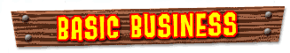

Bunches of Bananas
are worth 5 Bananas
For every 75 Bananas, you earn a
Banana Medal
(there are 15 in all)
Like Bananas,
Banana Coins
come in five
colors —
one for each Kong. Banana Coins help you buy all kinds of power-ups, so grab 'em all!
5-Banana Coins
can be collected by any Kong, and each is worth five Banana Coins